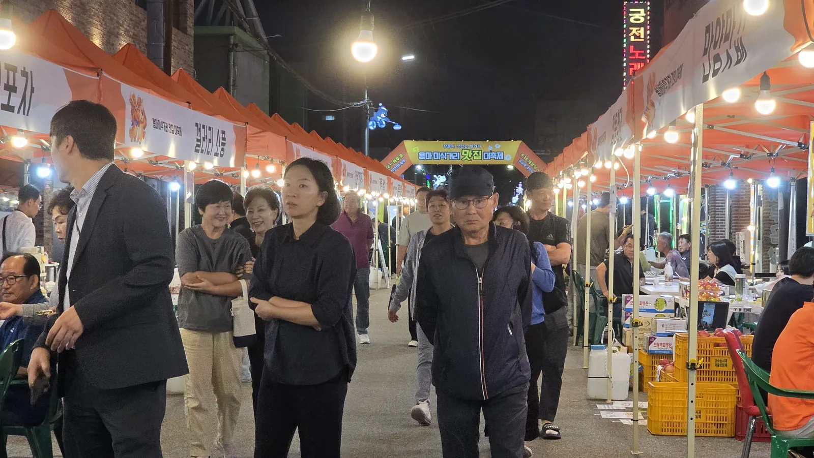

용 (龍) · DRAGON
하늘로 오른 용마의 기운을 담은 리더형 캐릭터
- 성격
- 활동적 · 앞장서는 리드형
- 상징
- 블루 스카프 · 크림색 뿔
용마는 ‘용 룡(龍)’과 ‘말 마(馬)’, 곧 용이 된 말입니다. 예로부터 뛰어난 준마이자 하늘로 오르는 상서로운 존재를 뜻했습니다.
하늘로 오르는 힘, 새로운 도약
주인을 싣고 달린 충직한 준마
경포 남쪽 마을이라는 뜻. 옛 이름 ‘보람이’를 한자로 옮긴 말이라고도 합니다.
바다와 호수가 만나는 포남동에서 시작해, 용이 된 말의 전설을 지나 오늘의 용마미식거리까지. 네 편의 이야기로 따라가 보세요.
강릉 사람들이 대대로 전해 온 이야기입니다. 채록한 책마다 줄거리가 조금씩 다르게 남아 있습니다.
최문한(崔文漢)은 고려 충숙왕의 부마도위였고, 훗날 강릉 최씨의 시조로 받들어졌습니다.
고려가 기울고 조선이 서자, 그는 불사이군(不事二君)의 충절을 지키려 두문동에 들었다가 강릉으로 내려와 몸을 숨겼습니다.
강릉에 머무는 동안에도 그는 아끼는 준마를 타고 옛 도읍 개성(송경)을 오갔습니다.
어느 날 연못가 버드나무에 말을 매어 두고 씻기는데, 갑자기 구름과 안개가 일더니 말이 연못 한가운데로 뛰어들었습니다. 말은 용으로 변해 하늘로 올라갔습니다.
사람들은 말이 용이 된 그 못을 용지(龍池)라 불렀고, 용이 된 말 용마(龍馬)의 이름은 이 일대의 지명과 거리 이름으로 이어졌습니다.
용마미식거리 캐릭터 ‘마’와 ‘용’은 이 전설 속 용마를 두 캐릭터로 나누어 만든 것입니다.
전설의 연못 용지는 강릉여자고등학교 곁에 지금도 남아 있습니다.
일부 채록본에는 용마가 강릉 곳곳을 지나며 지명을 남겼다고 전합니다.
※ 전하는 책에 따라 줄거리와 지명이 조금씩 다릅니다.
경포 남쪽의 작은 마을이 계획 주거지가 되고, 생활 골목이 되고, 이제 강릉의 밤을 여는 미식거리가 되었습니다.
행정구역 개편으로 ‘포남리’라는 이름을 얻었습니다.
강릉시가 출범하면서 리(里)가 동(洞)이 되어 지금의 ‘포남동’이 되었습니다.
구획정리사업으로 주거지가 조성되었고, 그 안에서 주민의 일상을 채우는 생활형 골목상권이 자연스럽게 자라났습니다.
용마거리가 강릉시 제1호 골목형상점가로 지정되었습니다.
‘용마미식거리’ 사업으로 야간관광·공연·미식·체험을 하나로 엮은 거리로 넓어지고 있습니다.
강릉시 자료에는 ‘경포 남쪽의 마을’이라는 뜻과 함께, 옛 이름 ‘보람이’를 한자로 옮긴 이름이라는 설명도 전합니다.
고려 충숙왕의 부마 최문한이 돌보던 말이 연못에 뛰어들어 용이 되어 승천했다는 용지 설화가 용마거리의 핵심 이야기입니다. 지금의 ‘용마’라는 이름도 이 용지각 설화에서 착안한 것으로 소개됩니다.

40년 동안 동네 사람들의 끼니를 책임져 온 생활 골목이, 강릉의 밤을 여는 미식거리로 새롭게 비상합니다.

하늘로 오른 용마의 기운을 담은 리더형 캐릭터
주인을 싣고 달린 충직한 준마를 담은 친구형 캐릭터
참고 자료 · 디지털강릉문화대전 「용지」 · 한국민족문화대백과사전 「용지(龍池)」 · 디지털강릉문화대전 「포남동」 · 강릉시청 「포남1동」 · 쿠키뉴스(2026. 9. 8.)